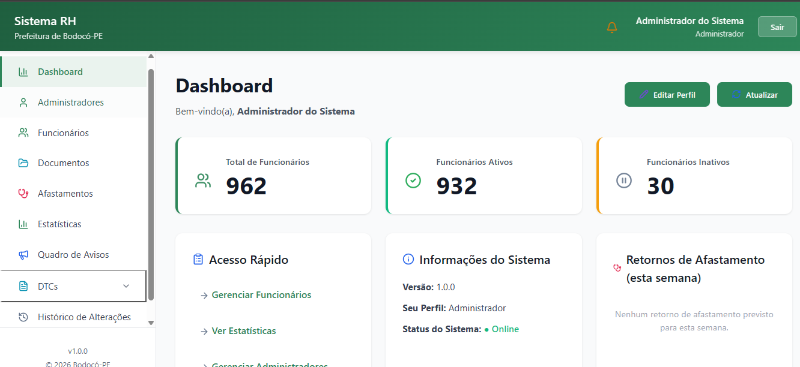
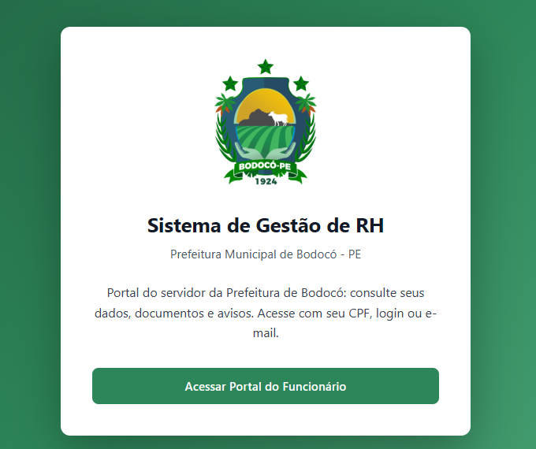

Sistema de gestão de pessoal e documentos digitalizados da Prefeitura Municipal de Bodocó — PE, atendendo cerca de 960 servidores, com trilha de auditoria completa de todas as ações realizadas no sistema.
O setor pessoal da Prefeitura trabalhava com cadastros dispersos em planilhas e documentos em papel, o que tornava lenta qualquer consulta sobre a vida funcional de um servidor. O sistema foi construído em conjunto com o diretor de TI do município para centralizar esse cadastro, digitalizar os documentos e dar ao próprio servidor acesso às suas informações.
Por lidar com dados pessoais de quase mil servidores, o requisito que mais pesou na arquitetura foi a rastreabilidade: toda ação feita por um usuário do sistema precisa ficar registrada, com autor, momento e o que mudou.


O backend é Node.js com TypeScript, usando Prisma ORM sobre PostgreSQL — o dado de RH é fortemente relacional (servidor, cargo, lotação, afastamento, documento) e se beneficia das garantias de integridade e das migrações versionadas do Prisma.
A auditoria ficou em uma base separada de MongoDB. O log de ações dos usuários é um fluxo append-only de alto volume, com formato que varia conforme o tipo de evento; mantê-lo fora do PostgreSQL evita inflar o banco transacional e permite registrar o payload de cada ação sem precisar de uma migração a cada novo tipo de evento.
Os documentos digitalizados são armazenados no Cloudflare R2, que oferece API compatível com S3 sem cobrar taxa de egresso — relevante num sistema em que os arquivos são baixados com frequência e o orçamento é público.
O principal aprendizado foi projetar a persistência pensando no perfil de cada dado em vez de empurrar tudo para um único banco: o relacional guarda o estado atual, o documental guarda o histórico do que aconteceu. Também foi um exercício de levantar requisitos diretamente com quem usa o sistema — o setor pessoal e o diretor de TI — e traduzir rotinas que existiam só em papel para um fluxo digital que as pessoas realmente conseguissem adotar.